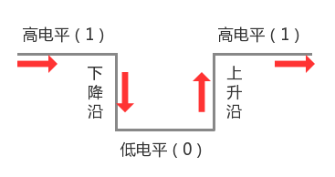

5. 按键¶
在掌控板上部边沿有按压式A、B两个按键。当按下按键时为低电平，否则高电平。
在掌控板A,B按键按下的过程如下述，当按下时,电平从高变低,在高电平（1）变为低电平（0）的那一瞬间叫作下降沿。当按键松开时,电平从低变高,在低电平（0）变为高电平（1）的那一瞬间叫作上升沿。 我们可以通过获取电平变化来获取,当前按键状态。
5.1. 获取按键状态¶
1 2 3 4 5 6 7 8 9 10 11 12 13 14 15 16 17 18 19 20 21 22 23 24 25 | from mpython import *
while True:
# 按键A按下为低电平
if button_a.value() == 0 :
# 按键延时
sleep_ms(20)
# 再次检测是否按下
if button_a.value()==0:
# 设置为红色
rgb[0] = (255,0,0)
rgb[1] = (255,0,0)
rgb[2] = (255,0,0)
rgb.write()
# 按键B按下为低电平
if button_b.value() == 0 :
# 按键延时
sleep_ms(20)
# 再次检测是否按下
if button_b.value()==0:
# 关灯
rgb[0] = (0, 0, 0)
rgb[1] = (0, 0, 0)
rgb[2] = (0, 0, 0)
rgb.write()
|
使用前，导入mpython模块:
from mpython import *
按键 A 和按键 B 按下:
button_a.value() == 0 #按键 A 按下
button_b.value() == 0 #按键 B 按下
注解
button_a 为按键 A 对象名，按键 B 对象名为 button_b ，是 machine.Pin 衍生类，继承Pin的方法，所以可使用 value 函数读取引脚值，返回 1 代表高电平信号，返回 0 代表低电平信号，因此当按键未按下状态时value==1，按下状态时value==0。
5.2. 按键中断¶
什么是中断呢？
在程序运行过程中，系统出现了一个必须由CPU立即处理的情况，此时，CPU暂时中止程序的执行转而处理这个新的情况的过程就叫做中断。 在出现需要时，CPU必须暂停现在的事情，处理别的事情，处理完了再回去执行暂停的事情。
1 2 3 4 5 6 7 8 9 10 11 12 13 14 15 16 17 18 19 | from mpython import * #导入mpython模块
import music #导入music模块
def ledon(_): #先定义中断处理函数：开灯和蜂鸣器
rgb.fill((128,0,0)) #打开板载灯，全部设置为红色，半亮度
rgb.write() #将颜色输出到灯
music.pitch(1000) #打开蜂鸣器：1000赫兹
def ledoff(_): #先定义中断处理函数：关灯和蜂鸣器
rgb.fill((0,0,0)) #关闭全部板载灯
rgb.write() #将颜色输出到灯
music.pitch(0) #关闭蜂鸣器
button_a.irq(trigger=Pin.IRQ_FALLING, handler=ledon) #设置按键 A 中断,下降沿触发，开灯和蜂鸣器
button_b.irq(trigger=Pin.IRQ_FALLING, handler=ledoff) #设置按键 B 中断,下降沿触发，关灯和蜂鸣器
while True: #在没有中断时，程序执行在循环内
pass
|
注解
以上程序默认情况下，程序在循环内空等不执行任何指令。当检测到a,b按键中断按时，回调对应的函数。
button_a.irq(trigger=Pin.IRQ_FALLING, handler=ledon) 是调用的中断处理程序对应的函数。trigger 配置可以触发中断的事件，可能的值是：Pin.IRQ_FALLING 下降沿中断；Pin.IRQ_RISING 上升沿中断；Pin.IRQ_LOW_LEVEL 低电平中断；Pin.IRQ_HIGH_LEVEL 高电平中断。handler 是一个可选的函数，在中断触发时调用，返回一个回调对象。
详细使用可查阅 button_[a,b].irq。
注意
定义中断处理函数时，函数须包含任意 一个 参数，否则无法使用。ledon()、ledoff()函数中的参数为 _ 。